- Proposed and led agentic platform architecture with planner-based agents, multi-layer guardrails, and long-, short-, and episodic memory — decomposing work into parallel streams and providing technical direction for the broader team.
- Proactively identified overlapping agent tooling across AI teams and designed a centralized Agent Tools Package from scratch — architecture, standards, release process, onboarding, and MCP (Model Context Protocol) integration. In production with flagship AI agents.
- Led build-vs-buy evaluation and delivered a production hybrid-search RAG system with custom retrieval architecture, indexing pipelines, and APIs — achieving 97% hit rate, 78% precision, and 97% recall with projected $75K–$85K annual cost savings over managed alternatives.
- Partnered with the search engineering team to build a cross-domain search routing service — a reusable platform component supporting multiple search experiences.
Hello, I'm
Ali Zamani
A
Toronto, ON
Senior ML/AI Engineer @ Loblaw Digital I architect enterprise agentic AI, production RAG, and shared platform infrastructure — shipping intelligent systems from design to deployment at retail scale.
5+
Years Work Experience
97%
RAG Hit Rate
$10M+
Client Savings
Planner-based Agentic Architecture
About Me
Production AI at scale
M.Sc. in Computer Science (University of Alberta) · Senior ML/AI Engineer at Loblaw Digital, Toronto.
Ali Zamani
Senior ML/AI Engineer
Toronto, ON
I build production AI systems end to end — from planner-based agentic architectures and hybrid-search RAG to standardized ML pipelines and GenAI frameworks on GCP.
At Loblaw Digital, I lead enterprise AI initiatives — shared agent infrastructure, production retrieval systems, and next-generation agentic platform architecture for retail at scale.
Previously at Priceline (Booking Holdings), I built Vertex AI ML pipelines, a scalable GenAI framework with LLM-as-a-Judge validation, NLP features including hotel review summarization that drove a 30% conversion uplift in A/B testing, and a flight price prediction system using time series forecasting on Vertex AI and BigQuery.
Platform Engineering
Agent Tools Package with MCP support — centralized agent tooling adopted across AI product teams.
Retrieval & RAG
Production hybrid-search system — 97% hit rate with projected $75K–$85K annual cost savings vs. managed alternatives.
Cross-Functional Delivery
Reusable search and platform services built with partner teams across the organization.
Technical Leadership
Led agentic platform architecture and guided engineering teams through a major transformation.
Career
Professional Experience
From agentic AI and production RAG to GenAI frameworks and ML pipelines on Vertex AI.
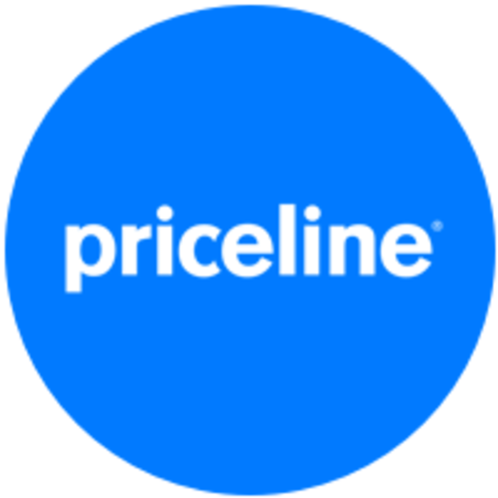
- Built a standardized ML pipeline for preprocessing, training, and online/offline deployment on Vertex AI, featuring modular design, feature store integration, versioning, and backfilling. Orchestrated the pipeline with a reusable Airflow DAG.
- Designed a scalable GenAI framework on GCP with CI/CD integration, featuring a robust Inference module with rate limiting, monitoring, parallel processing, and use-case-specific configuration, and a Validation module using LLM-as-a-Judge for automated evaluation and continuous quality feedback. Leveraged LangChain for orchestrating dynamic LLM workflows and integrating retrieval-augmented generation capabilities.
- Delivered a hotel review summarization use case combining sentiment analysis and summarization, with an algorithm to surface high-impact reviews. Achieved a 30% conversion rate uplift through A/B testing.
- Built a flight price prediction use case using time series forecasting. Deployed on Vertex AI with data from BigQuery, enabling data-driven pricing and integration with product features.
- Supported a customer-facing chatbot using Vector RAG, fine-tuned models, and AI agents to enhance customer interactions through contextual understanding and dynamic response generation.
- Built a complete ML pipeline on Azure for rock permeability prediction using LightGBM and XGBoost, achieving 94% accuracy.
- Implemented LightGBM and XGBoost models for predicting permeability of rock core images with 94% accuracy, saving upwards of $10 million for the client.
- Developed the ML pipeline from scratch on Azure and conducted error analysis to further improve model performance and robustness.
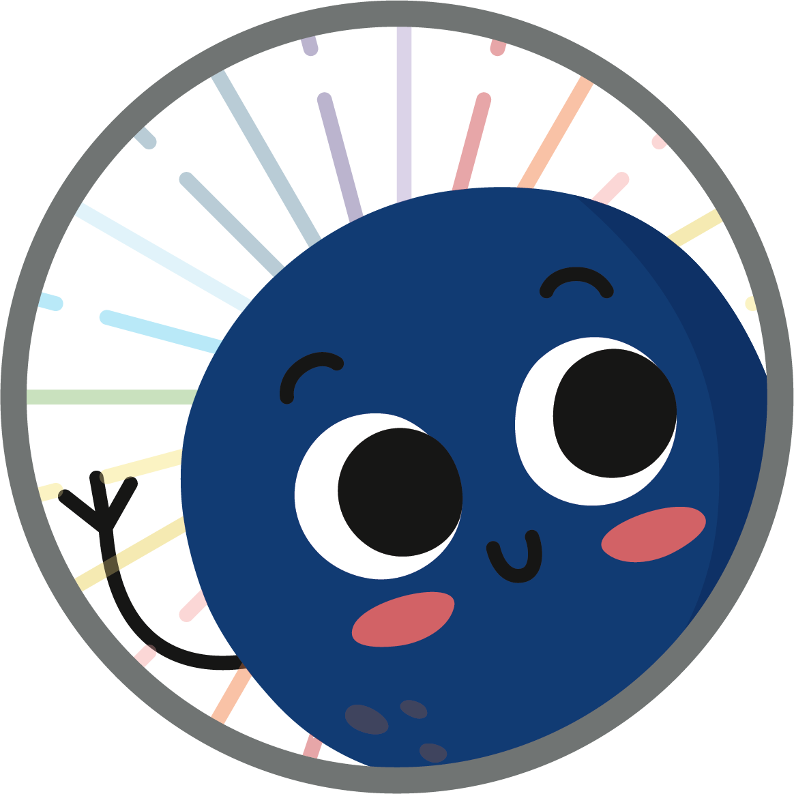
- Developed and deployed the back-end and front-end of the MIRA chatbot (mymira.ca), enhancing user experience with advanced NLP.
- Evaluated various Recurrent Neural Network language models for intent detection and entity extraction, achieving an F1-score of 97% for intent detection and 83% for entity extraction.
- Applied data augmentation techniques to improve training data quality and model performance.
- Applied sentiment analysis methods to assess user sentiments and tailored chatbot responses accordingly, improving user experience.
- Trained and managed two undergraduate students on the MIRA chatbot team.
Portfolio
Selected Projects
Production systems from current role, hackathon wins, and open-source ML tooling.
Enterprise AI · Current Role
Agent Tools Package
Proactively identified overlapping agent tooling across AI teams and designed a centralized package from scratch — architecture, standards, release process, onboarding, and MCP integration. In production with flagship AI agents.
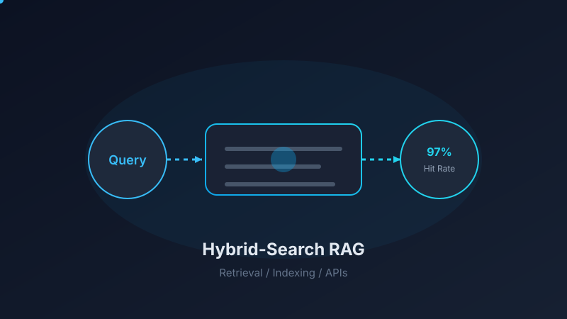
Production RAG System
Hybrid-search retrieval platform with 97% hit rate and projected $75K–$85K annual cost savings — custom-built for quality, flexibility, and long-term scalability.
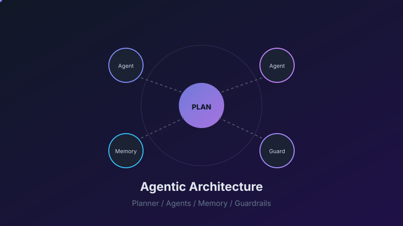
Agentic Platform Architecture
Next-generation agentic system with planner-based agents, guardrails, and multi-tier memory architecture.
Other Projects
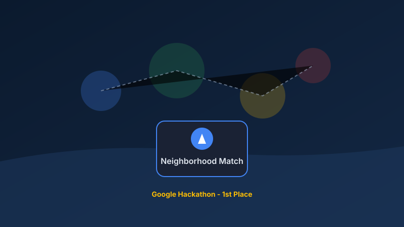
Neighborhood Recommendation System
Leveraged vector embeddings to suggest neighborhoods to users based on their preferences, enhancing personalized travel experiences.
Travel Assistance Chatbot
Developed a chatbot using GPT-4 to assist customers in finding their desired travel destinations, significantly improving user engagement and satisfaction.
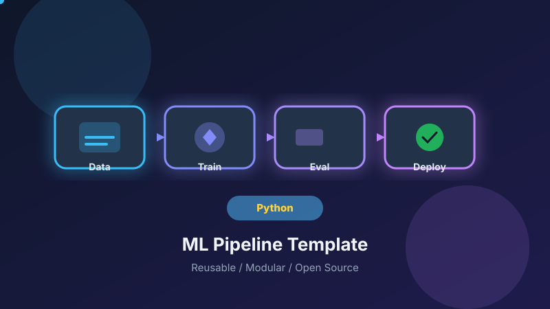
ML Pipeline Template
Developed an ML pipeline template to create a user-friendly utility that drastically speeds up the development and implementation of machine learning models for all sorts of various problems.
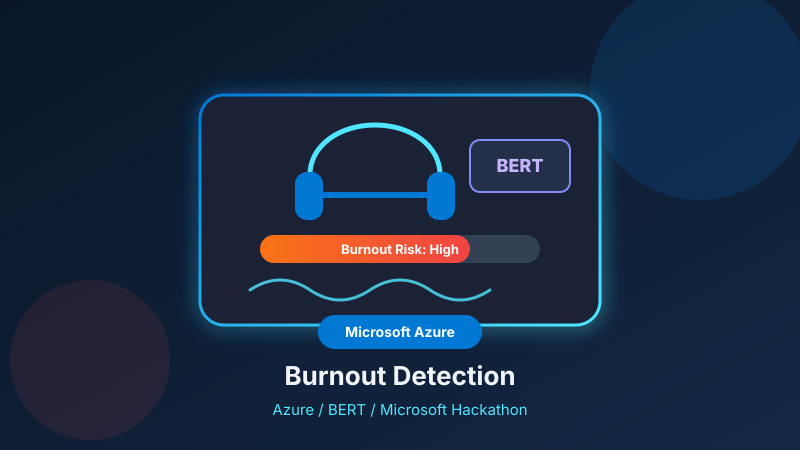
Burnout Detection System
Built an ML pipeline on Azure to detect burnout among call center agents, utilizing a pre-trained transformer-based model (BERT) for accurate sentiment analysis and stress detection.
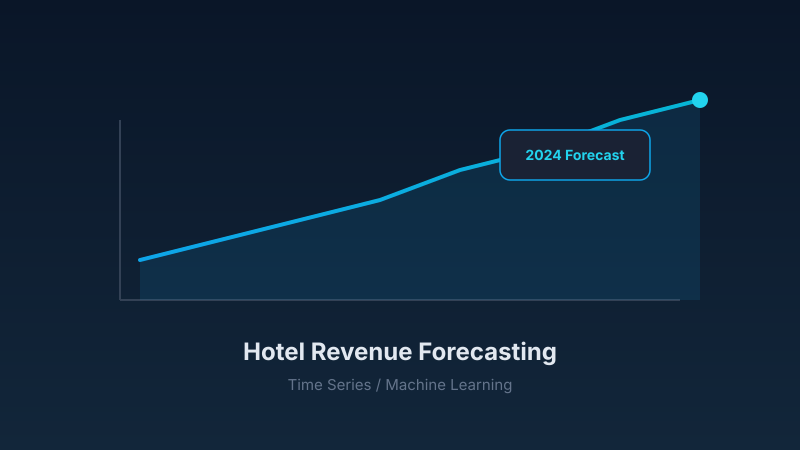
Hotel Revenue Forecasting
Forecasting global monthly hotel revenue for 2024 using time series and machine learning models.
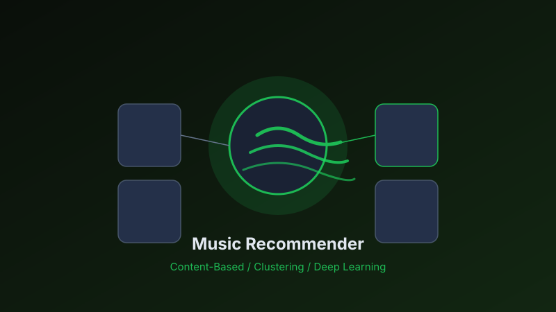
Spotify Music Recommender
Machine learning project leveraging the Spotify dataset to build a personalized music recommendation system — exploring content-based filtering, clustering, and deep learning to recommend tracks tailored to user preferences.
Expertise
Skills & Technologies
Tools and frameworks I use to build, deploy, and scale machine learning systems.
Programming
Python
C++
C
JavaScript
Generative AI / Agents
LLMs
Multimodal Models
LangChain
LangGraph
Prompt Engineering
Agent Orchestration
Tool Integration
Cloud / Infra
GCP
Vertex AI
BigQuery
Cloud Storage
Azure
Docker
Kubernetes
Airflow
Libraries
TensorFlow
PyTorch
Hugging Face
Scikit-learn
NumPy
Pandas
Tools
Git
Spark
Flink
NGINX
Jira
Databases
SQL
PostgreSQL
MySQL
Frameworks
Rasa
Django
Flask
Soft Skills
Communication
Stakeholder Collaboration
Leadership
Ownership
Agile Development
Education
Academic Background
Strong foundation in computer science and engineering across three degrees.
University of Alberta
Edmonton, AB, Canada
Jan 2021 – Sep 2022
Degree: M.Sc. in Computer Science
Supervisor: Dr. Osmar R. Zaiane
Amirkabir University of Technology
Tehran, Iran
Sep 2017 – Sep 2020
Degree: M.Sc. in Computer Engineering
Kashan University
Kashan, Isfahan, Iran
Sep 2013 – Sep 2017
Degree: B.Sc. in Electrical Engineering
Research
Publications
Peer-reviewed research in NLP, healthcare AI, and distributed systems.
2023 · Conference Paper
Intent and Entity Detection with Data Augmentation for a Mental Health Virtual Assistant Chatbot
Proceedings of the 23rd ACM International Conference on Intelligent Virtual Agents (IVA)
View paper →2022 · Journal Article
Developing, Implementing, and Evaluating an Artificial Intelligence–Guided Mental Health Resource Navigation Chatbot for Health Care Workers and Their Families During and Following the COVID-19 Pandemic: Protocol for a Cross-Sectional Study
JMIR Research Protocols, 11(7), e33717
View paper →2022 · MSc Thesis
Developing a Mental Health Virtual Assistance (Chatbot) for Healthcare Workers and their Families
University of Alberta
View thesis →2021 · Conference Paper
Developing and Implementing a Mental Health Chatbot to Support Healthcare Workers
REMAP-D · Vancouver, British Columbia, Canada
View MIRA research →2021 · Journal Article
An Efficient Load Balancing Approach for Service Function Chain Mapping
Computers & Electrical Engineering, 90, 106890
View paper → View code →2018 · Conference Paper
A Novel Approach for Service Function Chain (SFC) Mapping with Multiple SFC Instances in a Fog-to-Cloud Computing System
4th International Conference on Signal Processing and Intelligent Systems (ICSPIS)
View paper → View code →Get in Touch
Let's Connect
Open to collaborations and conversations about agentic AI, RAG, and production ML systems.